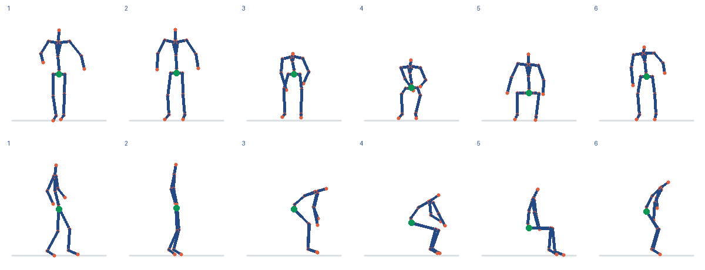

2026-11-10 · 费用与预留合计 ¥0.847193 / ¥10
| 模型 | 正确/总数 | 三类平均正确率 | 不确定 | 无效/缺失 | 中位耗时 | 估算费用 |
|---|---|---|---|---|---|---|
| qwen3.8-flash | 2/3 | 66.7% | 0 | 0 | 1.59 s | ¥0.002063 |
| qwen3.8-max-2026-09-02 | 2/3 | 66.7% | 0 | 0 | 3.26 s | ¥0.030744 |
| doubao-seed-2-1-pro-260915 | 0/3 | 0.0% | 0 | 3 | 0.33 s | ¥0.000000 |
| 模型 | 正确/总数 | 三类平均正确率 | 不确定 | 无效/缺失 | 中位耗时 | 估算费用 |
|---|---|---|---|---|---|---|
| qwen3.8-flash | 11/15 | 59.0% | 0 | 0 | 1.68 s | ¥0.010206 |
| qwen3.8-max-2026-09-02 | 14/15 | 66.7% | 0 | 0 | 3.13 s | ¥0.154368 |
公开 IMU + 头部高度 → 固定小模型预测骨架 → qwen3.8-max-2026-09-02 读图 → qwen3.8-flash 选择 → R3 检查

视觉请求 1 次；决策请求 1 次；检查状态：reviewed。
{
"suggested_action": "silent",
"message": null,
"reason": "模拟数据记录了自报无不适，但时效和当前状态未确认；仅依据当前模拟事实。",
"evidence": [
"fact_1"
]
}本次比较的是模型能否读对预测骨架的髋部升降。共18张图来自两段公开录制，包含倒序与重复帧对照，按同源簇解释；不是18位独立受试者。几何对照与骨架预测准确性是不同指标。
本演示使用已有五段训练的岭回归基线，保留之前 DynaIP 的独立比较结果。训练事件为模拟，输出保存在本机供评审查看。